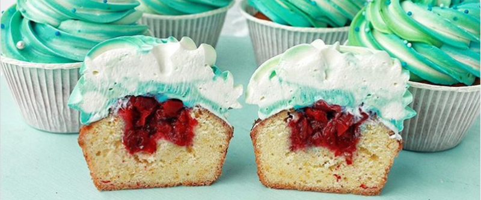

приготовление:
-
Приготовление кексиков:
-
200 гр сливочного масла довести до комнатной температуры.
-
Разогреть духовку до 170 градусов.
-
Взбить масло с 200 гр сахара. Добавить 4 яйца по одному, при этом взбивая массу миксером. Отдельно просеять 225 гр муки с 2 ч.л. разрыхлителя. Объединить обе массы и хорошо перемешать. Можно добавить ягоды (клюква, черника, малина), цедру цитрусовых или изюм. Выпекать около 30 минут.
-
Для сливочного крема 500 гр творожного сыра взбить с 70 гр сахарной пудры. Отдельно хорошо взбить 200 гр 33% сливки (до крепких пиков). Аккуратно перемешать обе массы. Можно добавить краситель.
-
Для ягодного конфи (можно взять вишню, смородину, малину, клюкву) взять 8гр. порошкового желатина, залить его водой из расчёта 1 гр желатина на 6 гр воды. 250гр. растаявших ягод измельчить блендером, положить в сотейник, добавить 12 гр. кукурузного крахмала, 80гр. сахара и довести до кипения, варить пока масса немного загустеет. Снять с огня, через две минуты добавить желатин и мешать до полного растворения. Использовать после полного остывания. Хранить в холодильнике накрыв плёнкой.
-
Собрать маффины как на фото.